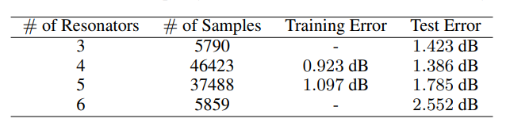

数学上，图是节点以及节点之间关系的集合，任意尺寸上的物体在任意空间上能够以任意形式发生连接，就可以构成一个图，从这个角度讲，一切关系皆是图。
而从关系的角度看世界，大到宇宙中星球之间的引力关系，城市中交通道路网的交错关系，社交网络中人与人之间的好友互访关系，小到蛋白质网络中的交互关系，化合物分子中原子间化合键关系，纳米集成电路中器件与器件之间的布局关系，几乎万物可以看做以某种关系连接起来，继而都可以视作一个图。
引文
现在大家的手机基本上都是5G手机，从2G到4G、5G信号的变化，本质上就是信号频率的增大，在以后的6G时代，信号的频率会进一步升级。而当信号频率不断增大后，对相关的芯片设计提出了更高的挑战，这其中的一个关键器件就是谐振器，谐振器就是让某个（或某段）频率信号通过，阻挡其他频率信号，达到选泽的目的，主要起到频率控制的作用，所有电子产品涉及频率的发射和接收都需要谐振器（比如射频芯片）。
近日，谷歌大脑团队在《Nature》发布了一篇使用图神经网络和强化学习实现芯片布局的paper，其中提到可以在6小时内生成符合工业生产要求的芯片布局，并已应用到下一代谷歌TPU的生成设计中。GNN应用与芯片电路设计吸引了笔者的兴趣，通过调研，2019年MIT团队发表了一篇GNN应用于芯片布局的代表性paper(Circuit-GNN: Graph Neural Networks for Distributed Circuit Design)，本文即对此进行解读。
该文章通过将高频谐振器中元器件之间的关系（相对空间距离）构造成一种边，从图的角度出发，提出了一种使用图神经网络（GNN）方法进行高效设计滤波器电路的方法。下面主要从以下几点进行展开：
- 背景介绍：介绍基本电路器件及性能参数
- GNN方法
- 实验与效果
- 总结与启发
一、背景介绍
1.1 谐振器及$s_{21}$参数
通常谐振器有三种，环形、棒性和方形，一个滤波器可由多个谐振器组合而成，并有一个输入和输出端口，输入信号通过输入端口后，其中特定频段的信号被放大输出，其他频率的就被阻挡或者反射，谐振器的参数包括，通常用$s_{21}$系数来进行性能评估
如上图所示，对于一个两端口的电子元器件DUT，输出信号a1从端口1进入后，会产生两个信号：1端口的反射信号b1，端口2的输出信号为b2，信号通常为正弦波的形式，b1和b2通常会发生相位变化或者幅度衰减，以调幅为例，b1和a1两个信号幅值的比值$s_{21}$为插入损耗，也就是有多少能量被传输到目的端（端口2），这个值越大越好，理想值是1，并用20*log$s_{21}$转化dB形式，通常为负值，当$s_{21}=\frac{1} {10}$时为-20dB。
进一步的，针对不同频率 $\omega_{i}$的输入信号，DUT的$s_{21}$可以看作是不同频率下的参数叠加，表示为：$s_{21}(\omega) = \sum_{i=1}^N \frac {a_i} {j\omega - b_i}$，$\frac {a_i} {j\omega_i - b_i}$表示在频率 $\omega_{i}$ 的输入信号下该器件的性能参数，其中$a_i, b_i$为复数参数，分别表征幅值和相位的变化。
1.2 现有的解决方案及其缺不足
传统的人工电路设计非常依赖专家的经验，同时花费的时间比较高，随着AI技术的发展，一些深度学习方法也逐渐得到应用，其核心是预测参数$a_i, b_i$。下图所示为深度学习应用于芯片电路设计的流程抽象图，在前向过程中，模型将给定的电路映射为相应的转移函数（$s_{21}$），并通过曲线进行刻画;反向过程中，模型将梯度进行回传，更新模型权重和电路拓扑结构来更好的拟合$s_{21}$。
但是，现有的基于深度学习的方法，通常面对不同的基板需要单独设计一个模型，并通过更改其中的参数（谐振器个数、类型、排布等）来进行有监督的训练，学习到面对当前template的模型。另外有些情况下需要再增加一个模型来挑选不同基板下的最佳模型，实用性比较局限；同时，现有的深度学习方法通常只能限定一个参数，未实际解决模型梯度如何反馈到电路设计的变动上。
二、GNN方法
2.1 前向过程
1 边的定义和节点特征
一个正方向谐振器视为一个节点，其参数包含位置和尺寸，表示为$[x,y,a,\theta]^T$，其中$x、y$为平面坐标，$a$为边长，$\theta$为槽的角位置
谐振器i，j之间的边属性定义为$[\theta_{i},\theta_{j}, x_i-x_j, y_i-y_j, g_{ij}, s_{ij}]$，其中$x_i-x_j,y_i-y_j$为相对偏移位置，$g_{ij}, s_{ij}$表示间隔gap的长度和偏移，节点和边的定义可以参见下图：
同时考虑到电磁耦合会随着距离筛检，对距离设置了阈值。
2. GNN endoding
有了节点和边的定义以及属性后，一个template下所有的谐振器就构成了一张图，那么就可以使用GNN方法进行图表示学习。在每一层GNN中，节点和边的特征更新步骤如下：
-
更新边的特征
第$t$层网络中$i, j$节点的特征更新依赖于 $t-1$ 层当前边的特征$e_{ij}$以及边上的两个节点特征，并通过$f_e^t$（MLP）进行映射,具体为$$e_{ij}^t = f_e^t (\eta_i^{t-1}, \eta_j^{t-1}, e_{ij}^{t-1})$$
-
更新节点的特征
第$t$层网络中 $i$ 节点的特征更新依赖于 $t-1$ 层当前节点的特征$ \eta^{t-1}_i$ 以及所有的关联边特征，并通过$f_n^t$（MLP）进行映射,具体为$$\eta_{i}^{t} = f_n^{t} (\eta_i^{t-1},\sum_j e_{ij}^{t})$$
3. 图池化
通常GNN应用于graph-level任务时，最后的池化操作时将图中所有节点的嵌入特征进行池化作为整体的特征，而本文中仅仅使用了电路中与输入、输出端口连接的两个谐振器节点的特征，通过拼接作为最终的全局表示。
4. 预测
在图表示之后使用MLP进行预测，表示进行直接进行预测，输出的为多个采样频率的复数形式$s_{21}$参数，假设采样m个频率，那么$\hat{y}\triangleq[S_{21}(\omega_1),…, s_{21}(\omega_m)]^T$,其中$\omega_i $表示从频率带宽$\Omega \triangleq [\omega_{min}, \omega_{max}]中的采样$。在训练的时候，Loss定义为：
$$
\mathcal{L}(\theta) = \mathbb{E}_{r,y \sim D} ||\real {(\hat {y} (r;\theta)} - \real(y))||_1 + || \image (\hat {y} (r;\theta) - \image(y))||_1
$$
其中，$r \in \Reals ^{N \times 4} $为芯片参数，$\theta$为模型参数，最小误差包含复数参数中实数和虚数两部分，$D$为训练数据集。
如下图所示，整个过程可概括为四步：
- 构图
- GNN学习
- 特征抽取为全局表示
- 预测
2.2 反向优化
loss设计对带通滤波器的loss函数改造
对于带通滤波器，要求特定频率范围内的信号才能通过，那么可以将该频率的标签设置为$y_i = 1$，非该频率的设置为0，则优化目标为二分类，相应的目标函数为：
$$
\mathcal{J} = \sum\limits_{i:\omega_i \in \Omega^\star}(|\hat {y_i}| - 1)^2 + \sum\limits_{i:\omega_i \notin \Omega^\star}|\hat y_i|^2
$$
梯度如何反馈到布局的改变
反向迭代时，第$i$谐振器每次随机选择一个方向$d_i \in {(-1, 0), (1, 0), (0, -1), (0, 1)}$进行移动，当方向确定后，预先计算出该谐振器在该方向上能够移动的最大距离$m_i$，那么，当前谐振器下一次移动方式定义为：
$$
p_i = p_i^{\star} + \sigma(q_i)m_{i}d_i
$$
其中$p_i^{\star}$为节点的当前坐标为止，$q_i$为学习参数，$\sigma(q_i)$为偏移比例。下图为每个谐振器选定方向后的最大移动距离示意图：
三、实验与效果
3.1 数据集
本文使用方形谐振器，并分别使用了谐振器数量为3、4、5、6的电路template进行学习，并用商业套件CST STUDIO SUIT生成标签，模型评估指标为$s_{21}$的幅值平均绝对误差:
$$
\epsilon_{db}(\hat y, y) \triangleq \frac {1} {m} \sum\limits_{i=1}^{m}|20log(|y_i|) - 20log(|\hat y_i|)|
$$
3.2 训练
总共100000个数据样本，训练集为80%的4、5模板样本，其他全部为测试集，模型表现如下：

时间性能上，在1080Ti的nvidia显卡上，GNN模型单次预测50ms，比商业套件CST STUDIO SUIT快4个数量级。同时，文中也展示了一些good和bad cases，如下图所示（其中虚线为groud truth， 虚线为GNN模型）：
3.3 性能评估
与人类专家对比
 上图中有三个带通滤波器，－6dB为通频带（大于－6dB的频率都可以通过），可以看到专家设计和GNN模型都达到了标准，细心点会发现，GNN模型的曲线峰值离0更近，即损失更小。
上图中有三个带通滤波器，－6dB为通频带（大于－6dB的频率都可以通过），可以看到专家设计和GNN模型都达到了标准，细心点会发现，GNN模型的曲线峰值离0更近，即损失更小。
与商业软件对比
给定带宽滤波器设计参数，其带宽和中心频率分别从[20, 40]GHz 和[235, 315]GHz进行采样得到，对商业软件CST和GNN模型的输出。为了衡量模型针对带宽滤波器的设计能力，引入两个指标：
Pass-band IOU: 衡量滤波电路的带宽与目标带宽的相近程度，具体为两个带宽中频率的交集数量除以并数量集，类似于Jaccard相似度，越大越好
Insertion Loss：$s_{21}$峰值的绝对值，越小越好
针对每个设计目标，CST从450个仿真中挑一个最好的，GNN从10个候选中挑一个最好的，总共采样了60个设计任务，最终评估CDF曲线如下图所示，可以看到在两项指标上GNN都好与CST，去CDF=0.5得到均值指标，GNN的通频带IOU为0.80优于CST的0.73， GNN的insertion loss为4.13dB优于CST的4.92dB。

四、总结与启发
- 本文第一个基于深度学习解决了面向多种template进行芯片设计的问题
- 本文第一个基于深度学习解决了芯片设计的反向问题：即给定电路的电磁（滤波频率）特性，通过深度学习的梯度回传来优化模型参数，反向进行芯片设计
- 本文介绍了一种将图模型的梯度回传与布局设计耦合的方法，可以应用到其他涉及到节点具有几何或空间意义的图模型场景中
- 本文使用了输入和输出端口直连的谐振器嵌入特征来表征全图，而不是将图中所有节点的嵌入特征进行聚合这种通常做法，经验上对其他类似场景具有指导意义，例如两个蛋白分子交互作用时，可能只有部分特殊状态的原子才能够成键，因此可以将这些代表性的特定原子的嵌入特征拼接来表示整个蛋白质分子，而不是对所有原子进行聚合。